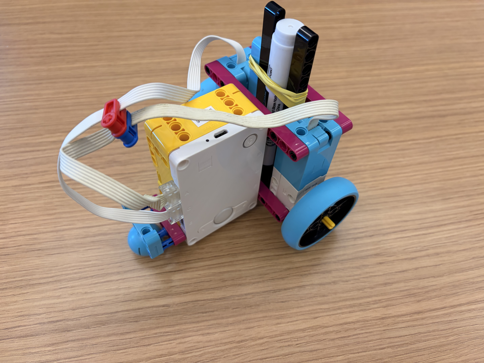
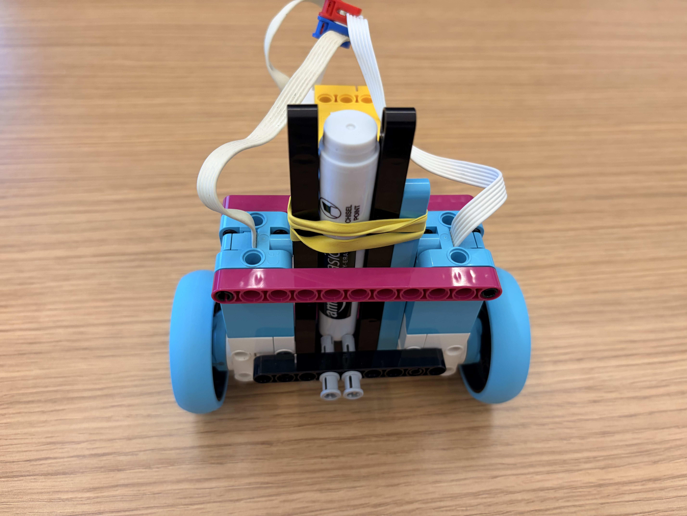
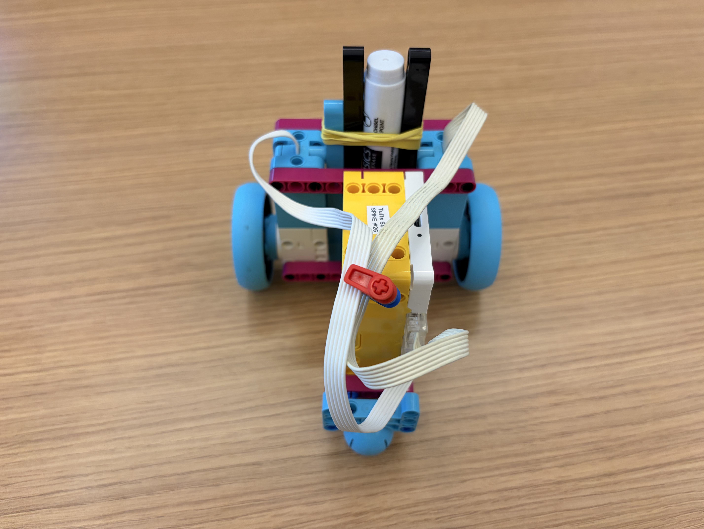
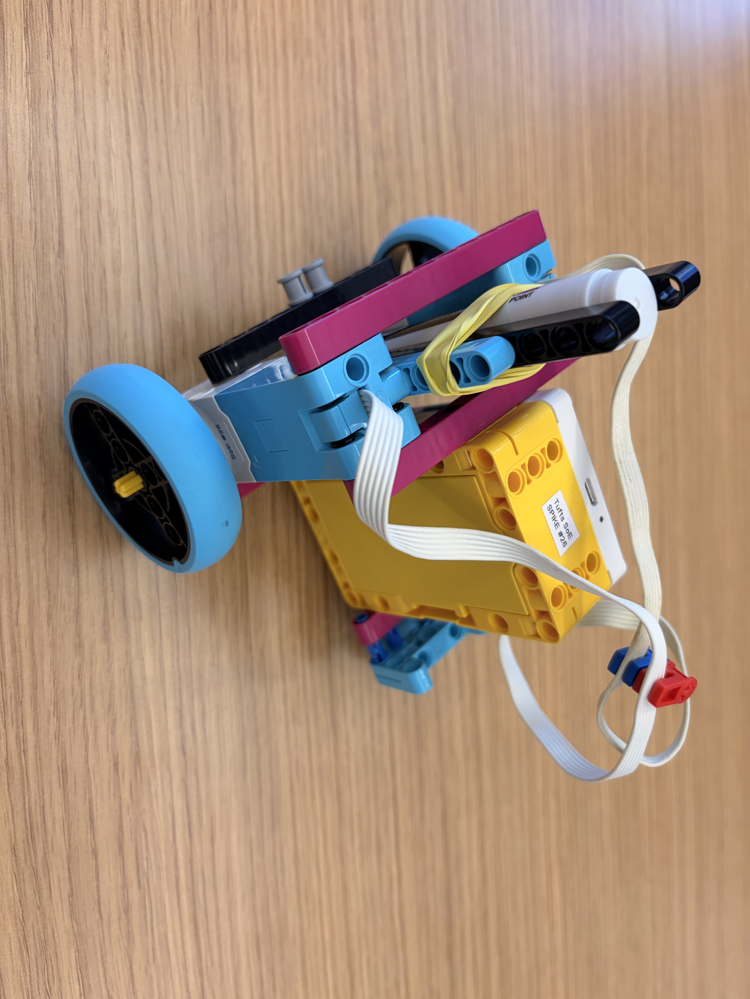
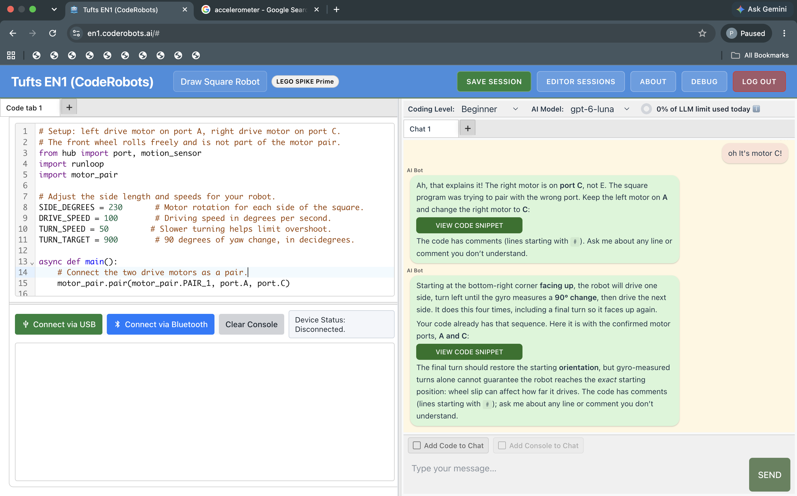

Objective: For a square drawing competition, build a robot that draws a "perfect" square and comes back to its starting position.
I had to change my design many times because I didn't consider the center of rotation until I had completed my first design. I figured out that the pen should be exactly at the center of rotation. This makes the square as accurate as possible and keeps the pen from drawing extra marks that are not part of the square.
I ended up using the hub's yaw value (the angle it has turned) so the robot can run on any surface and still turn 90 degrees.



Here is my CodeRobots.ai session, followed by the final code.

# Setup: left drive motor on port A, right drive motor on port C.
# The front wheel rolls freely and is not part of the motor pair.
from hub import port, motion_sensor
import runloop
import motor_pair
# Adjust the side length and speeds for your robot.
SIDE_DEGREES = 230 # Motor rotation for each side of the square.
DRIVE_SPEED = 100 # Driving speed in degrees per second.
TURN_SPEED = 50 # Slower turning helps limit overshoot.
TURN_TARGET = 900 # 90 degrees of yaw change, in decidegrees.
async def main():
# Connect the two drive motors as a pair.
motor_pair.pair(motor_pair.PAIR_1, port.A, port.C)
# Trace four sides, starting from the bottom right and facing up.
for side in range(4):
# Drive one side before making the next left turn.
await motor_pair.move_for_degrees(
motor_pair.PAIR_1,
SIDE_DEGREES,
0,
velocity=DRIVE_SPEED
)
# Set the current direction to zero before this turn.
motion_sensor.reset_yaw(0)
await runloop.sleep_ms(100)
# Turn left and keep checking how far yaw has changed.
motor_pair.move_tank(motor_pair.PAIR_1, -TURN_SPEED, TURN_SPEED)
while abs(motion_sensor.tilt_angles()[0]) < TURN_TARGET:
await runloop.sleep_ms(5)
# Stop turning before driving the next side.
motor_pair.stop(motor_pair.PAIR_1)
# Free the motor ports after the fourth turn.
motor_pair.unpair(motor_pair.PAIR_1)
runloop.run(main())